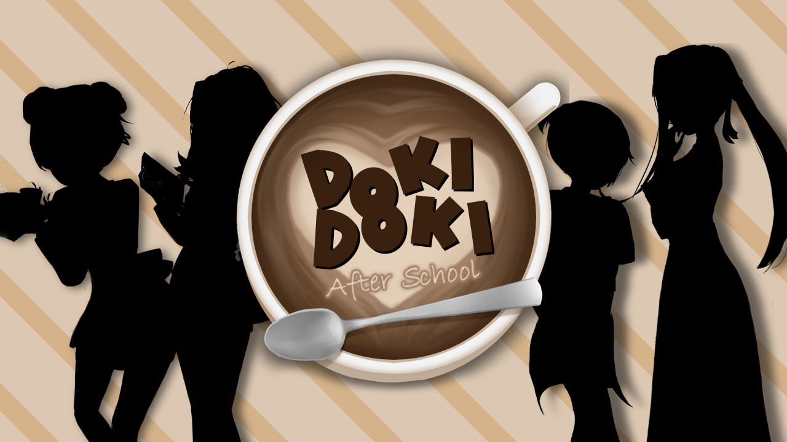

After School
A história se passa meia década após o fim do Clube de Literatura, onde nosso personagem principal voltou para casa da universidade. Um encontro casual com uma velha amiga desperta o desejo de reunir o clube; uma chance para os amigos se relacionarem mais uma vez. No entanto, cada um deles deve lidar com as duras realidades da vida adulta e o fascínio nostálgico de tempos mais simples.
⬇ Download